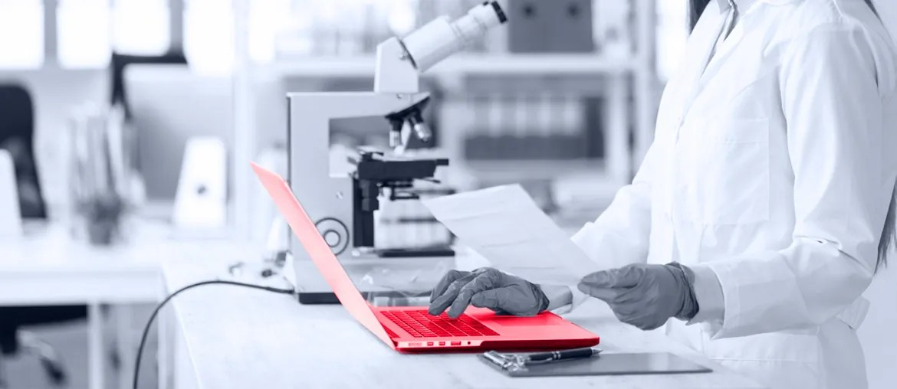

1
Map the full grant flow
Map NORMA and reporting work end to end, including support handoffs, data export, and audit steps, so pain is visible fast.
Proposal Brief For Corporate IT
NORMA looks like the main digital doorway for your applicants. More grant volume and a reporting change can turn small gaps into daily support work for Corporate IT.
We saw the Student Assistant hire in Corporate IT and read it as a load signal. Teams usually add support help when upkeep and user questions start taking time from architecture work.
The signal suggests your IT team carries more daily grant operations. Public pages show NORMA is central to every application. Reporting is also moving away from Foundgood and Researchfish. In 2025, the foundation backed more than 2,200 projects. It is also widening work across Europe. That mix brings more edge cases, more user questions, and more admin steps. If it stays manual, senior architects lose roadmap time.
Map NORMA and reporting work end to end, including support handoffs, data export, and audit steps, so pain is visible fast.
Stabilise login, form validation, document handling, status updates, and admin screens that likely create the most repeat support work.
Build a safer bridge for the reporting transition, with clearer data mapping, tighter ownership, and fallback steps while old tools are phased out.
Add UI smoke checks, release gates, and a weekly demo rhythm, so your architects get fewer surprises and better delivery control.

Elinext replaced an older platform with a CFR-compliant SaaS system for secure files, collaboration, and clinical trial workflows. The product supports 45,000 users.
View case study
Elinext renewed an internal web application for user role management and access control, with OAuth 2.0 support, stronger performance, and UI updates.
View case studyIf this reads close to what your team is facing, we can turn it into a small, safe first sprint.
Talk With Elinext